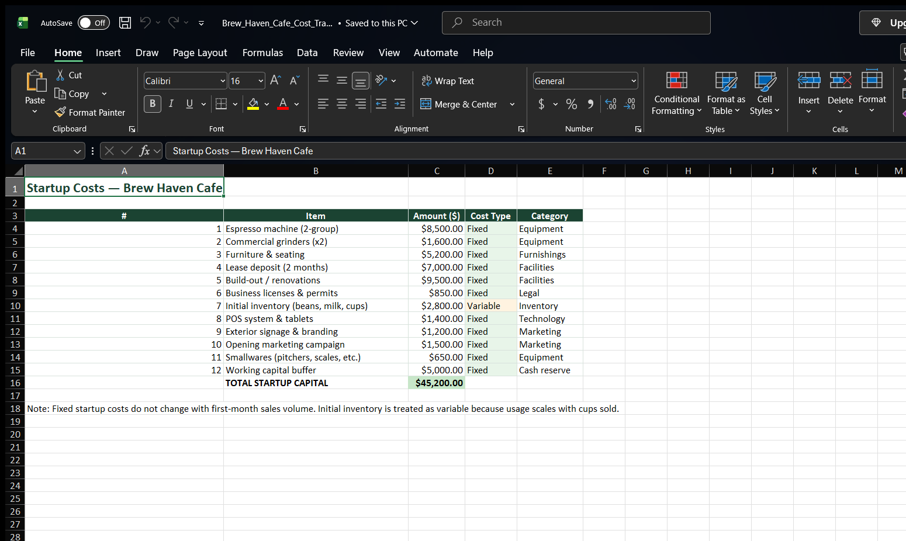
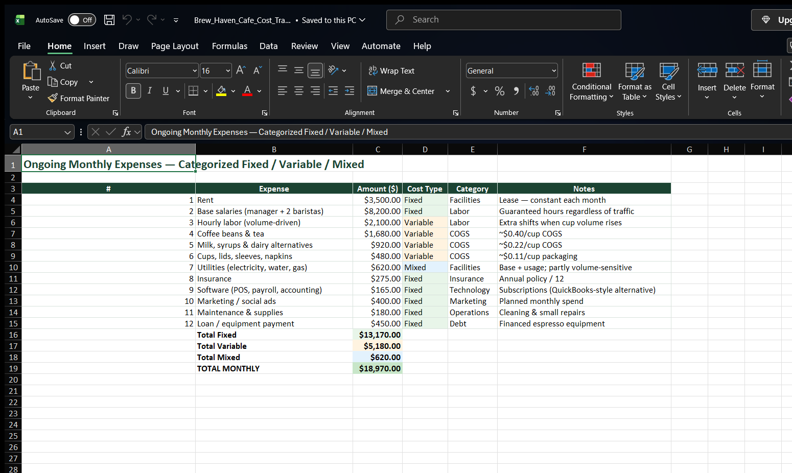
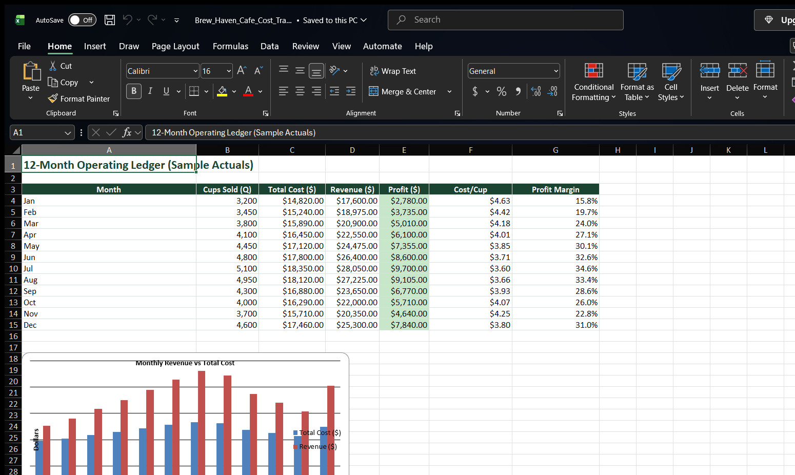
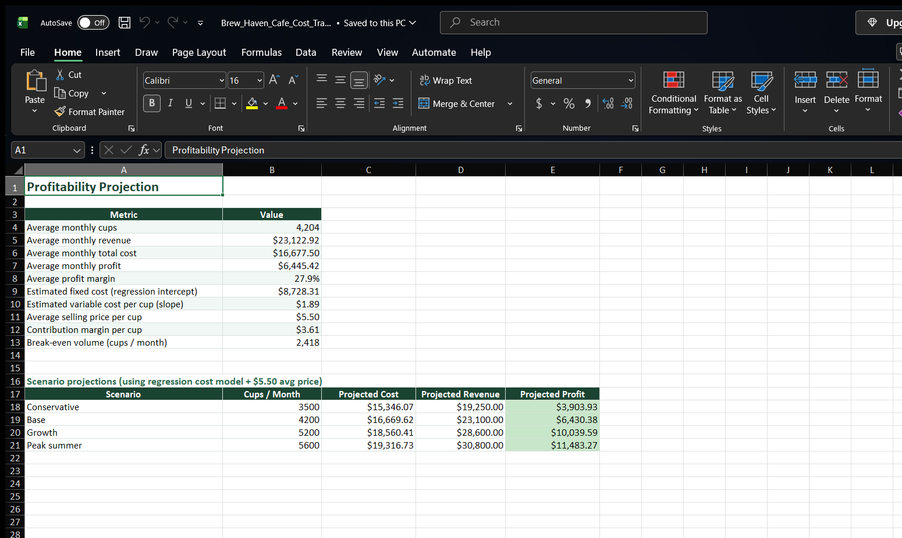
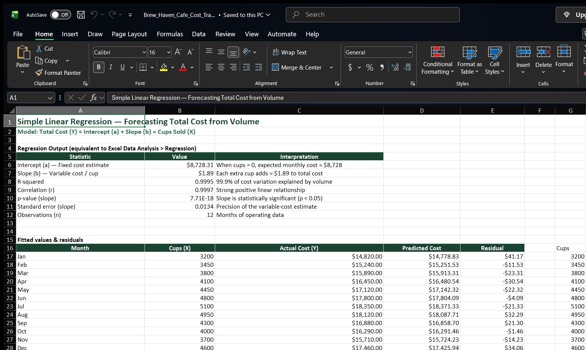
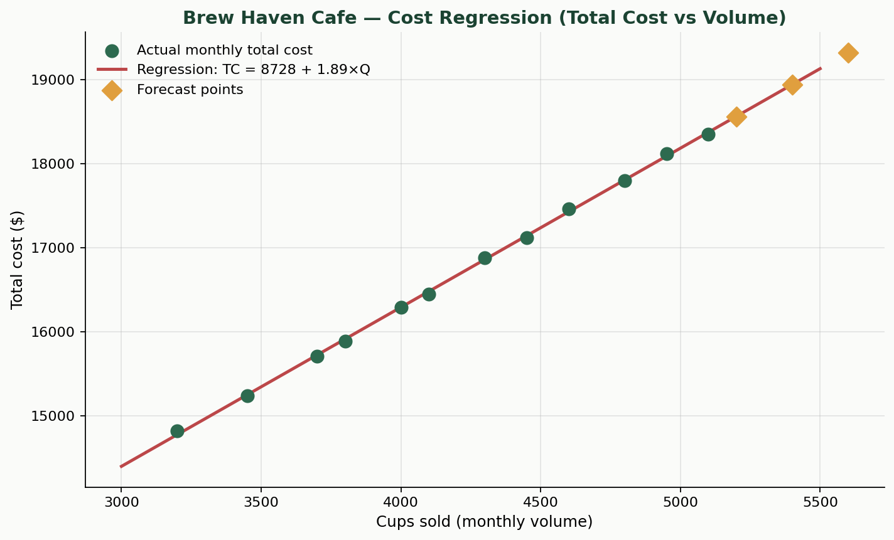
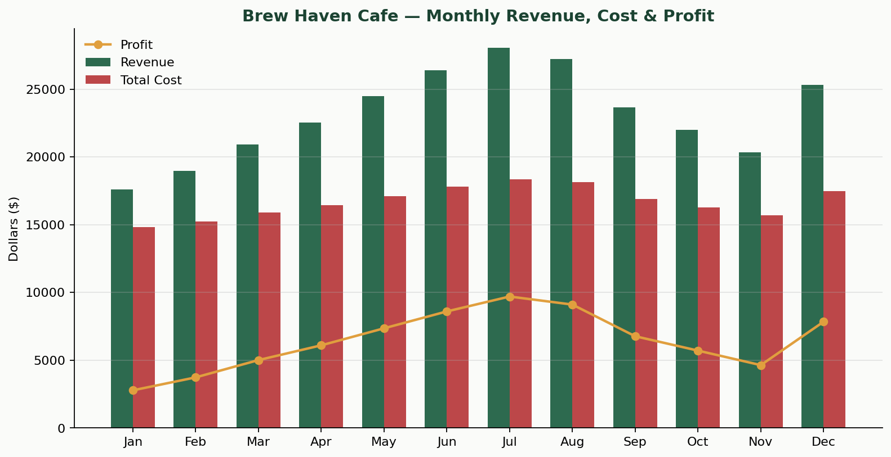

QuickBooks alternative · Excel / Google Sheets
Hands-on cost tracker, profitability projection, and regression forecasting for a hypothetical coffee shop—built as an Excel workbook with screenshot-ready charts.
Hypothetical business: Brew Haven Cafe, a neighborhood specialty coffee shop. Startup and ongoing costs are entered in Excel (same layout works in Google Sheets), categorized as fixed, variable, or mixed, then used to project profitability.
| Item | Amount | Type |
|---|---|---|
| Espresso machine (2-group) | $8,500 | Fixed |
| Lease deposit + build-out | $16,500 | Fixed |
| Furniture & seating | $5,200 | Fixed |
| Initial inventory | $2,800 | Variable |
| POS, licenses, signage, marketing, buffer… | $12,200 | Fixed |
| Expense | Amount | Type |
|---|---|---|
| Rent | $3,500 | Fixed |
| Base salaries | $8,200 | Fixed |
| Hourly labor (volume-driven) | $2,100 | Variable |
| Beans, milk, cups (COGS) | $3,080 | Variable |
| Utilities | $620 | Mixed |
Simple linear regression on 12 months of cups sold (X) vs total cost (Y), equivalent to Excel Data Analysis → Regression or Google Sheets LINEST.
| Statistic | Value | Interpretation |
|---|---|---|
| Intercept (a) | $8,728.31 | Estimated monthly fixed cost when volume = 0 |
| Slope (b) | $1.8908 | Each extra cup adds ~$1.89 to total cost |
| R-squared | 0.9995 | ~99.95% of cost variation explained by volume |
| Forecast @ 5,200 cups | $18,560 | Next-period cost projection |
| Forecast @ 5,400 cups | $18,939 | Growth scenario |
| Forecast @ 5,600 cups | $19,317 | Peak volume scenario |
Real Microsoft Excel window captures (opened via Excel COM on this machine — not mockups).







Opening a coffee shop forces owners to confront a basic economic truth: not every dollar of cost behaves the same way. Fixed costs such as rent, salaried managers, insurance, and software subscriptions remain largely constant within a normal range of activity. Variable costs—coffee beans, milk, cups, and volume-driven hourly labor—rise and fall with cups sold. Mixed costs like utilities sit between those poles. Using an Excel cost tracker modeled on spreadsheet bookkeeping practices similar to those demonstrated in Jeremy’s Tutorials (2024) and Davie Mach (2023), Brew Haven’s startup package totals $45,200, while a typical month shows $13,170 in fixed costs and $5,180 in clearly variable costs (plus $620 of mixed utilities). That structure directly shapes pricing. The blended ticket of $5.50 must more than cover the estimated variable cost per cup; the remainder is contribution margin that pays down fixed costs and generates profit. Regression analysis of twelve months of operations estimates variable cost at about $1.89 per cup and fixed cost near $8,728 per month, implying a contribution margin of roughly $3.61 and a break-even volume near 2,418 cups. Prices set below variable cost destroy cash on every sale; prices that ignore fixed-cost coverage leave the shop busy but unprofitable.
The regression model Total Cost = 8,728.31 + 1.8908 × Cups fits the sample tightly (R² = 0.9995), confirming that volume explains nearly all month-to-month movement in total cost for this dataset. The slope coefficient is the managerial takeaway: each additional cup is expected to add about $1.89 of cost. Forecasts at 5,200, 5,400, and 5,600 cups project total costs of about $18,560, $18,939, and $19,317 respectively. At a $5.50 average price, those volumes remain comfortably profitable, but the model also warns that aggressive discounting or waste that pushes effective variable cost toward the selling price would erase margin quickly. Because the p-value on the slope is far below 0.05 (≈ 7.7 × 10⁻¹⁸), managers can treat the volume–cost relationship as statistically meaningful rather than random noise.
For decision-making, regression bridges accounting categories and forward planning. Managers can plug expected traffic into the equation to budget cash, schedule labor, and set promotional floors without waiting for month-end close. Cost-structure insight supports pricing decisions (floor = variable cost; target = variable cost + fixed-cost allocation + profit), while regression translates that structure into quantified forecasts. Together they help Brew Haven plan inventory purchases, evaluate whether a second shift is justified, and judge whether a seasonal menu price change still clears break-even. Spreadsheet tools such as Excel or Google Sheets—used here as a QuickBooks alternative—make these analyses accessible for small businesses that need clarity before they invest in full accounting software.
~440 words · References: Jeremy’s Tutorials (2024); Davie Mach (2023). See docs/Written_Report.md.